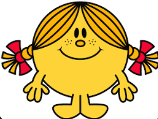

Engaging in creative activities helps us to develop new skills, broaden our horizons, and learn about ourselves. Creativity requires us to use our brains in new and different ways, which can help us to grow and learn. We can enhance our fine motor abilities and spatial awareness, for instance, by learning to play an instrument or paint. We may solve problems in new ways by using our creativity, which can also be used in other aspects of our lives.
About Me
I am a student in CICCC for Web devlopment program. I have part-time class from Monday to Friday. It's my first time to study abroad. Althout I am nervous because of unfamiliar, I love the nature environment in Canada. Fortunately, I made a lot of friends. I like stories they shared with me.
Hobbies
In my leisure time I like spending time with these hobbies:
- Read books.
- Cook new dishes following recipes.
- Watching seires.
- Take photos.
Also, I am a sweet tooth. I like these foods.
- Beverage
- Bubble tea, Smoothie, Coffee
- Desert
- Donut, Cheese cake, Pudding
My puppy
His name is Poop, I like playing with him. He always companies with me after school. I feel happy as I see his face fulling of confusion.
My favorate website
I like useful websites, and most I used is Google Map
.
Creativity fosters personal development
Quotation
The only thing we have to fear is fear itself.
Contact
- e-mail: alana@gamil.com
- Phone: +1(604)88939544
- Address: sonewher in Burnaby BC